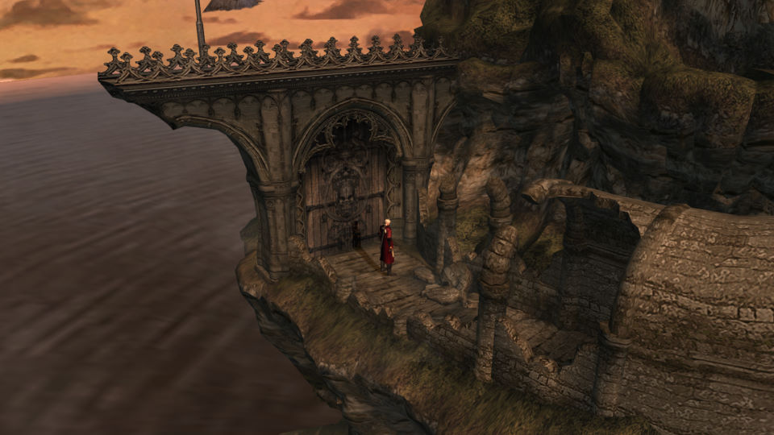

名稱：惡魔獵人1／鬼泣1 (Devil May Cry 1，中文版)
簡介：CAPCOM 2001年出品的動作清版遊戲，2018年經由Steam移植到Windows，推出一到三代
HD版合輯版（HD Collection） [待補]。

備註：本版為2018/03/14 Steam HD版
保護：Steam
操作：遊戲不支援滑鼠，主要支援遊戲手把。遊戲手把各按鍵功能可在進入遊戲後的選項中
得知，但遊戲手把按鍵與對應的鍵盤按鍵，則必須在主選單的選項中設定。以下為一
些內定按鍵功能：
AD = 左右移動
WS = 上下移動
K = 跳躍
I = 揮砍
J = 射擊（跳起時）
L = 動作（如開門等）
Q = 地圖
M = 確認／遊戲選單
右Shift = 系統選單
Esc = 取消